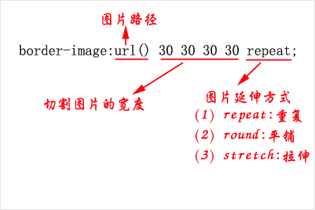
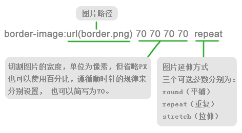
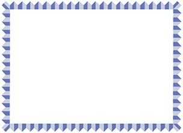

语法：

说明：
border-image:顾名思义就是为边框应用背景图片，它和我们常用的background属性比较相似
从上面语法分析图中，我们可以看出，使用border-image属性设置边框背景图需要设置3种参数：
(1)图片路径；
(2)切割图片的宽度（4条边的宽度，依次为上，右，下，左，按顺时针方向，类似于border属性的4条边顺序）；
(3)图片延伸方式；
使用方法：

兼容性：
- 浅绿 = 支持
- 红色 = 不支持
- 粉色 = 部分支持
| Values | IE | Firefox | Chrome | Safari | Opera | iOS Safari | Android Browser | Android Chrome |
|---|---|---|---|---|---|---|---|---|
| Basic Support | 6.0-10.0 | 2.0-3.0 | 4.0-14.0 -webkit- |
3.1-5.1 -webkit- |
15.0+ | 3.2-5.1 -webkit- |
2.1-4.3 -webkit- |
18.0+ |
| 11.0+ | 3.5-14.0 -moz- |
15.0 -webkit- |
6.0+ | 6.1+ | 4.4-4.4.4 | |||
| 15.0+ | 16.0+ |
事例：
比如提取了下面的图为边框背景

repeat
div{
margin:0 auto;
height:100px;
line-height:100px;
text-align:center;
font-size:30px;
width:450px;
background:#f4fffa;
border:70px solid #f00;
border-image:url(images/8.jpg) 100 repeat;
}
round
div{
margin:0 auto;
height:100px;
line-height:100px;
text-align:center;
font-size:30px;
width:450px;
background:#f4fffa;
border:70px solid #f00;
border-image:url(images/8.jpg) 100 round;
}
stretch
div{
margin:0 auto;
height:100px;
line-height:100px;
text-align:center;
font-size:30px;
width:450px;
background:#f4fffa;
border:70px solid #f00;
border-image:url(images/8.jpg) 100 stretch;
}